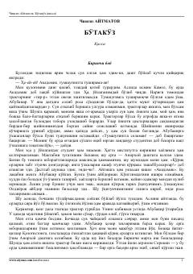

BAnorxoy dashtiga kelgan yosh yigitning mashaqqatli mehnat va hayotiy sinovlari haqidagi qissa.
Asarda Anorxoy dashtiga o'z ixtiyori bilan kelgan yosh yigit Kamolning qiyinchiliklarga to'la hayoti va mehnat faoliyati tasvirlanadi. U o'z oldiga qo'ygan maqsadlari sari intilar ekan, atrofidagi odamlar bilan bo'lgan murakkab munosabatlar va tabiat bilan yuzma-yuz qoladi.